# download data
dir.create('data')
file_list <- c('gene_counts', 'cell_coords', 'neuron_cells', 'other_cells',
'positive_genes', 'negative_genes', 'other_genes')
for(filename in file_list) {
download.file(paste0('https://github.com/dmcable/BIOSTAT620/raw/main/data/p9/',filename,'.rds'),
destfile = paste0('data/',filename,'.rds'))
}Problem set 9
This problem set explores the analysis of high dimensional data in the application area of spatial transcriptomics. For reference, consult the following papers:
- Robust decomposition of cell type mixtures in spatial transcriptomics
- Cell type-specific inference of differential expression in spatial transcriptomics
Load in the data
We begin by downloading the data. Hint: run this once and leave it as eval = FALSE in your script.
Next, we load in the data and packages (note that counts is a sparse matrix):
# required packages
library(ggplot2)
library(Matrix)
library(tidyverse)── Attaching core tidyverse packages ──────────────────────── tidyverse 2.0.0 ──
✔ dplyr 1.1.4 ✔ readr 2.1.5
✔ forcats 1.0.0 ✔ stringr 1.5.1
✔ lubridate 1.9.3 ✔ tibble 3.2.1
✔ purrr 1.0.2 ✔ tidyr 1.3.1
── Conflicts ────────────────────────────────────────── tidyverse_conflicts() ──
✖ tidyr::expand() masks Matrix::expand()
✖ dplyr::filter() masks stats::filter()
✖ dplyr::lag() masks stats::lag()
✖ tidyr::pack() masks Matrix::pack()
✖ tidyr::unpack() masks Matrix::unpack()
ℹ Use the conflicted package (<http://conflicted.r-lib.org/>) to force all conflicts to become errors# load data
counts <- readRDS('data/gene_counts.rds') # gene counts matrix
coords <- readRDS('data/cell_coords.rds') # cell coords matrix
neuron_cells <- readRDS('data/neuron_cells.rds') # list of neuron cell barcodes.
other_cells <- readRDS('data/other_cells.rds') # list of non-neuron cell barcodes.
positive_genes <- readRDS('data/positive_genes.rds') # list of genes specific for neurons
negative_genes <- readRDS('data/negative_genes.rds') # list of genes specific for not neurons
other_genes <- readRDS('data/other_genes.rds') # selected list of other genes
all_genes <- c(positive_genes, negative_genes, other_genes) # all genes
small_counts <- as.matrix(counts[all_genes, c(neuron_cells, other_cells)]) # subset of the countsData visualization
- Begin by visualizing the coordinates of the cells in 2D space. Hint: this information is contained in the
coordsdataframe.
coords <- readRDS('data/cell_coords.rds') # cell coords matrix
set.seed(2025)
coords_df <- as.data.frame(coords)
colnames(coords_df) <- c("x", "y")
ggplot(coords_df, aes(x = x, y = y)) +
geom_point(alpha = 0.5) +
theme_minimal() +
labs(title = "Cell coordinates in 2D space")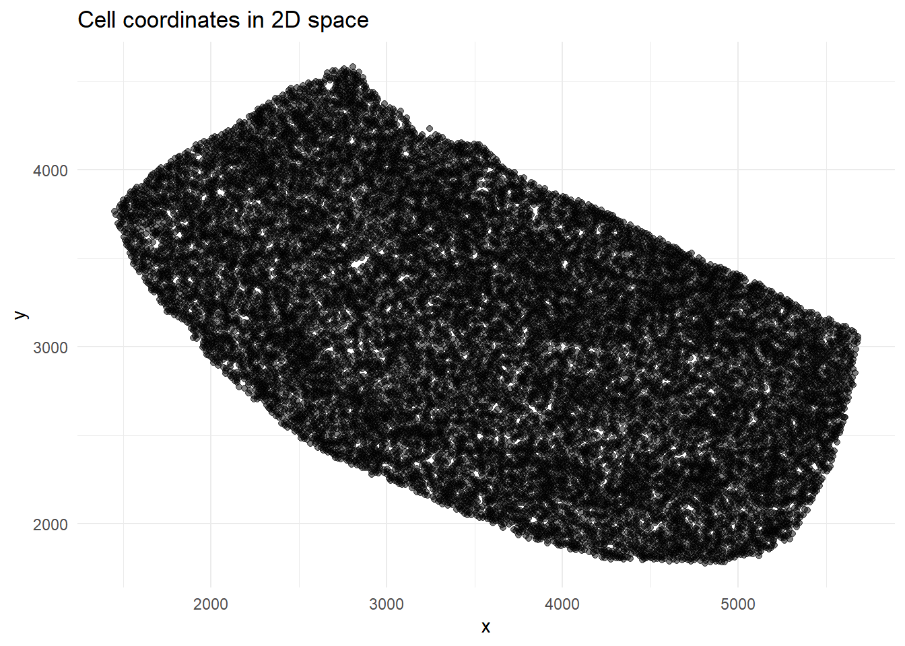
- Let’s now visualize the expression of the Hpca gene, which is specific for neurons. Begin by creating a histogram of the counts of the gene. Hint: examine the
countsmatrix.
library(ggplot2)
hpca_counts <- counts["Hpca", ]
hpca_df <- data.frame(count = hpca_counts)
ggplot(hpca_df, aes(x = count)) +
geom_histogram(binwidth = 1, fill = "steelblue", color = "black") +
theme_minimal() +
labs(
title = "Expression of Hpca gene",
x = "Hpca counts",
y = "Number of cells"
)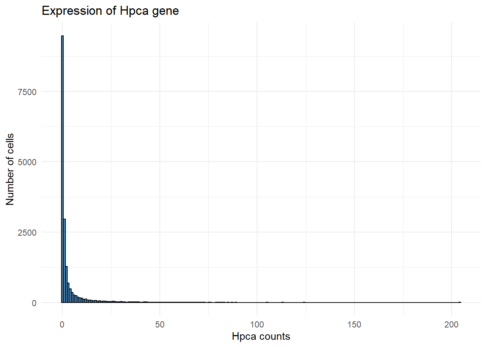
- Make a spatial plot of the gene expression of this gene. Use the cell coordinates as the spatial coordinates, and use gene expression counts as the color. Set a maximum threshold for your color scale based on the histogram above.
coords_subset <- coords[match(colnames(small_counts), rownames(coords)), ]
hpca_counts <- small_counts["Hpca", ]
hpca_df <- data.frame(
dim_1 = coords_subset[, 1],
dim_2 = coords_subset[, 2],
count = hpca_counts
)
max_count <- 20
library(ggplot2)
ggplot(hpca_df, aes(x = dim_1, y = dim_2, color = pmin(count, max_count))) +
geom_point(size = 1) +
scale_color_gradient(low = "gray90", high = "red", limits = c(0, max_count)) +
theme_minimal() +
labs(
title = "Spatial plot of Hpca gene expression",
x = "Dimension 1",
y = "Dimension 2",
color = "Hpca counts"
)
Distance
- Now, make a spatial plot of the cell types. Create a dataframe
plot_dfcontaining only the neurons and the non-neurons. Plot the neurons and non-neurons as two different colors. Hint: the neuron barcodes are inneuron_cells, and the non-neuron barcodes are inother_cells.
coords_subset <- coords[match(colnames(small_counts), rownames(coords)), ]
cell_type <- ifelse(colnames(small_counts) %in% neuron_cells, "Neuron", "Non-neuron")
plot_df <- data.frame(
dim_1 = coords_subset[, 1],
dim_2 = coords_subset[, 2],
cell_type = cell_type
)
library(ggplot2)
ggplot(plot_df, aes(x = dim_1, y = dim_2, color = cell_type)) +
geom_point(size = 1) +
theme_minimal() +
labs(
title = "Spatial plot of neuron and non-neuron cells",
x = "Dimension 1",
y = "Dimension 2",
color = "Cell Type"
) +
scale_color_manual(values = c("Neuron" = "red", "Non-neuron" = "blue"))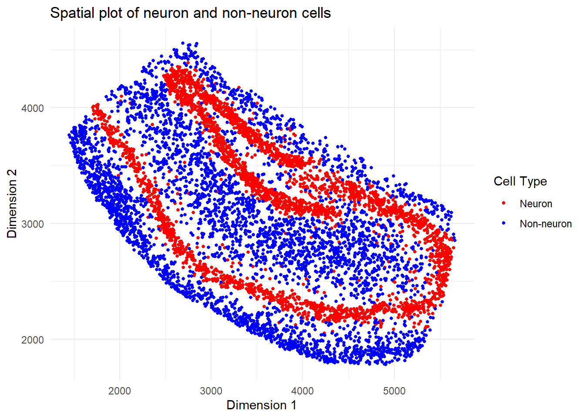
- Using only the cells selected above in
plot_df, compute the distance matrix pairwise between each cell (hint: userdistfromfields). and compute the k-nearest-neighbors withK = 25(hint useget.knnfromFNN). Choose the first cell, and visualize the spatial locations of the k nearest neighbors relative to that cell.
library(fields)Warning: package 'fields' was built under R version 4.4.3Loading required package: spamWarning: package 'spam' was built under R version 4.4.3Spam version 2.11-1 (2025-01-20) is loaded.
Type 'help( Spam)' or 'demo( spam)' for a short introduction
and overview of this package.
Help for individual functions is also obtained by adding the
suffix '.spam' to the function name, e.g. 'help( chol.spam)'.
Attaching package: 'spam'The following object is masked from 'package:Matrix':
detThe following objects are masked from 'package:base':
backsolve, forwardsolveLoading required package: viridisLite
Try help(fields) to get started.library(FNN)
dist_matrix <- rdist(plot_df[, c("dim_1", "dim_2")])
k <- 25
knn_result <- get.knn(plot_df[, c("dim_1", "dim_2")], k = k)
first_cell_neighbors <- knn_result$nn.index[1, ]
library(ggplot2)
ggplot(plot_df, aes(x = dim_1, y = dim_2)) +
geom_point(color = "grey80", size = 1) +
geom_point(data = plot_df[1, , drop = FALSE], color = "blue", size = 3) +
geom_point(data = plot_df[first_cell_neighbors, , drop = FALSE], color = "red", size = 2) +
theme_minimal() +
labs(
title = "First cell and its 25 nearest neighbors",
x = "Dimension 1",
y = "Dimension 2"
)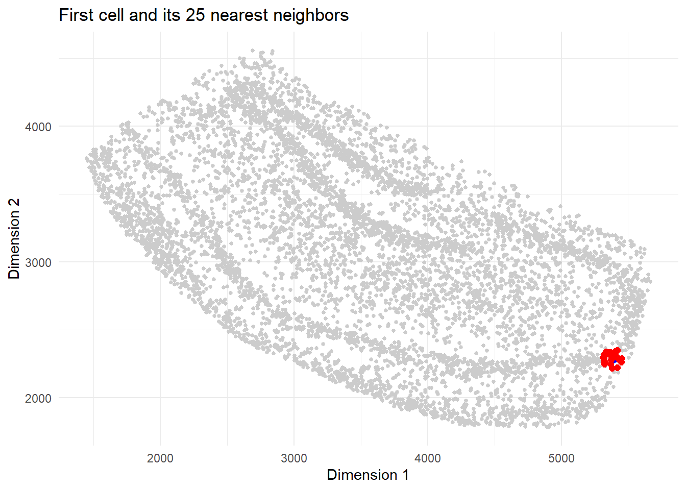
- For each cell, calculate the proportion of neighbors that are neurons, and visualize these proportions spatially.
library(FNN)
nn_res <- get.knn(plot_df[, c("dim_1", "dim_2")], k = 25)
neighbor_indices <- nn_res$nn.index
neuron_prop <- apply(neighbor_indices, 1, function(neighbors) {
mean(plot_df$cell_type[neighbors] == "neuron")
})
plot_df$neuron_prop <- neuron_prop
library(ggplot2)
ggplot(plot_df, aes(x = dim_1, y = dim_2, color = neuron_prop)) +
geom_point(size = 1) +
scale_color_gradient(low = "gray90", high = "blue") +
theme_minimal() +
labs(
title = "Proportion of Neuron Neighbors",
x = "Dimension 1",
y = "Dimension 2",
color = "Neuron\nProportion"
)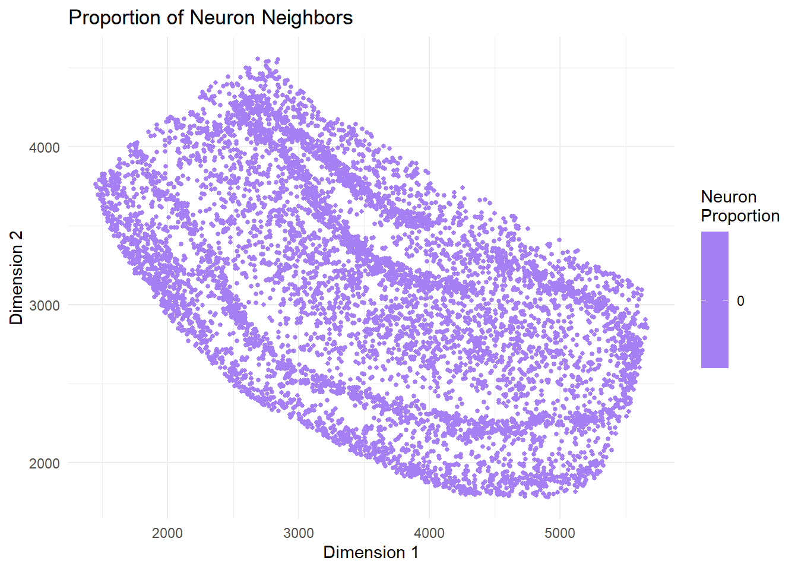
Smoothing
- Using
loess, fit a 2D spatial smoothing function to the neuron proportion values. Usedegree = 1andspan = 0.05. Create a spatial plot with the color as the smooth fit.
loess_fit <- loess(neuron_prop ~ dim_1 + dim_2, data = plot_df, degree = 1, span = 0.05)
plot_df$neuron_prop_smooth <- predict(loess_fit)
library(ggplot2)
ggplot(plot_df, aes(x = dim_1, y = dim_2, color = neuron_prop_smooth)) +
geom_point(size = 1) +
scale_color_gradient(low = "gray90", high = "blue") +
theme_minimal() +
labs(
title = "Smoothed Proportion of Neuron Neighbors",
x = "Dimension 1",
y = "Dimension 2",
color = "Smoothed\nNeuron Proportion"
)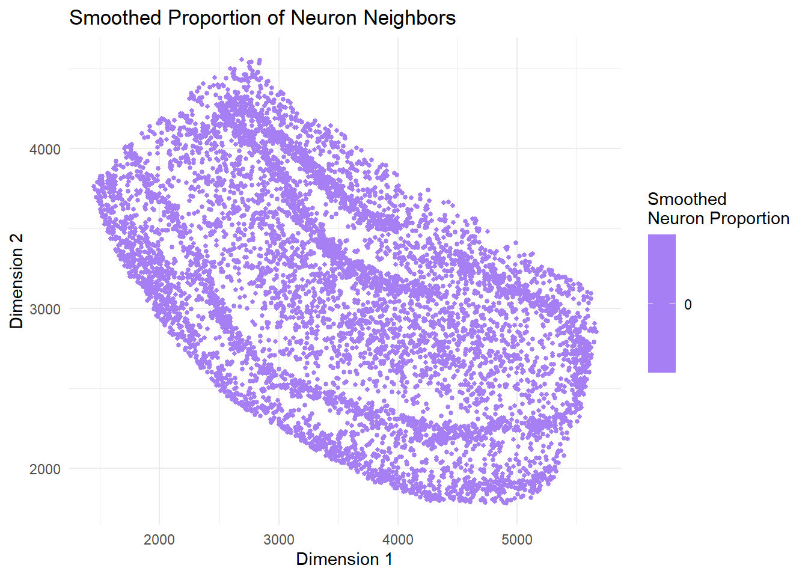
- Visualize a 1-dimensional section of the smooth function. Filter for
ywithin50of3000. Plot both the proportion and the fitted smooth values in two separate colors.
plot_data <- plot_df %>%
filter(dim_2 > 50, dim_2 < 3000)
ggplot(plot_data, aes(x = dim_1)) +
geom_line(aes(y = neuron_prop, color = "Neighbor Proportion")) +
geom_line(aes(y = neuron_prop_smooth, color = "Smooth Fit")) +
labs(
title = "1D Slice of Smoothed Neuron Proportion",
x = "Dimension 1",
y = "Proportion"
) +
scale_color_manual(values = c("Neighbor Proportion" = "blue", "Smooth Fit" = "red")) +
theme_minimal()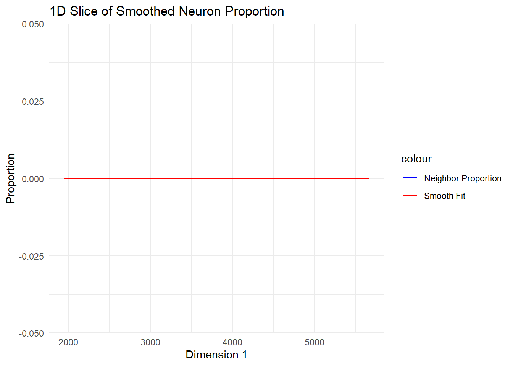
Dimension reduction
- Using a subset of the counts (
small_counts), perform a PCA (hint: useprcomp). Plot the first principal component (hint: check thexvariable of theprcompobject) vs the total cellular count.
pca_res <- prcomp(t(as.matrix(small_counts)), scale. = TRUE)
total_counts <- colSums(small_counts)
pca_df <- data.frame(
PC1 = pca_res$x[, 1],
Total_Count = total_counts
)
ggplot(pca_df, aes(x = Total_Count, y = PC1)) +
geom_point(alpha = 0.6) +
theme_minimal() +
labs(
title = "PCA: PC1 vs Total Cellular Count",
x = "Total Cellular Count",
y = "First Principal Component (PC1)"
)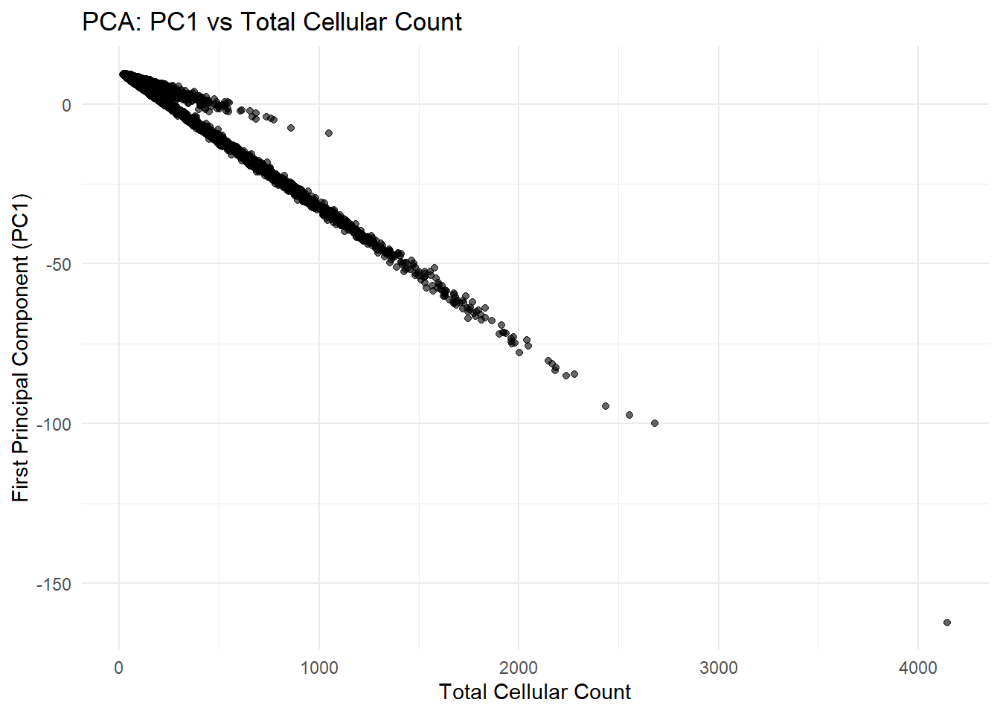
Comment on your finding:
The first principal component is strongly correlated with total cellular count, indicating that total RNA abundance is the dominant source of variation across cells.
- To mitigate this issue, we will normalize
small_countsby dividing each cell by the sum of the total counts. Hint: use thesweepfunction. Repeate the PCA with the normalized count matrix. Make a plot of percent of variance explained for each of the first 500 PCs (threshold this plot at 5% variance explained).
cell_sums <- colSums(small_counts)
normalized_counts <- sweep(small_counts, 2, cell_sums, "/")
normalized_pca <- prcomp(t(as.matrix(normalized_counts)), scale. = TRUE)
pve <- normalized_pca$sdev^2 / sum(normalized_pca$sdev^2)
pve_df <- data.frame(
PC = 1:length(pve),
PVE = pve
) %>% filter(PC <= 500)
ggplot(pve_df, aes(x = PC, y = PVE)) +
geom_line() +
geom_hline(yintercept = 0.05, linetype = "dashed", color = "red") + # 5% threshold
theme_minimal() +
labs(
title = "Percent Variance Explained (PVE) After Normalization",
x = "Principal Component",
y = "Percent Variance Explained"
)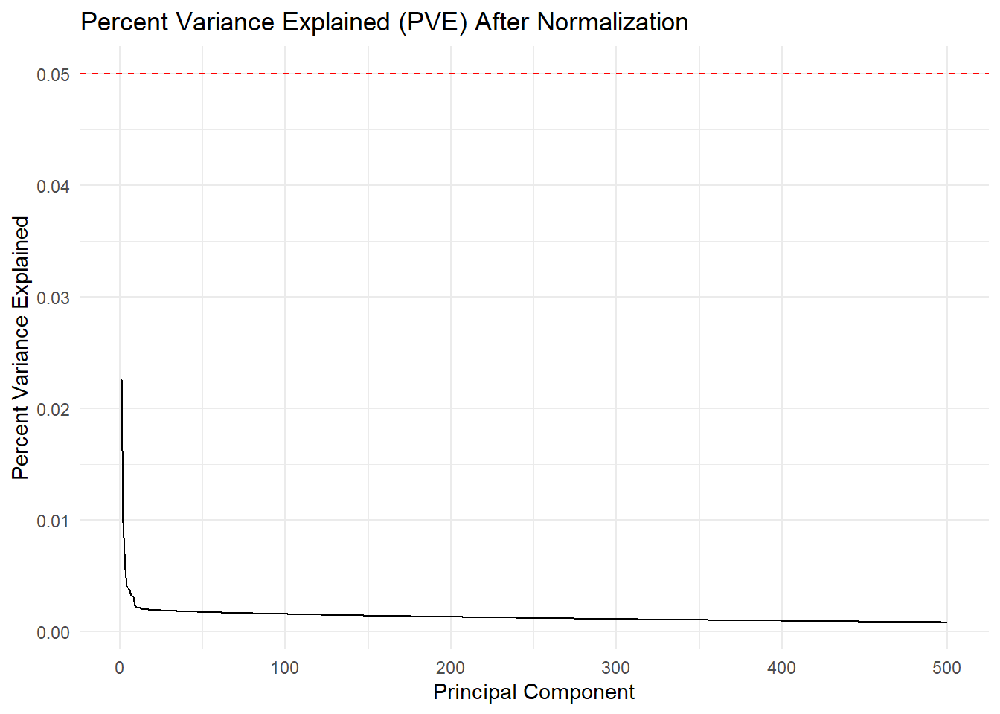
- Make spatial plots visualizing the first four PCs in spatial coordinates.
coords_subset <- coords[colnames(small_counts), ]
colnames(coords_subset) <- c("dim1", "dim2")
pca_scores <- as.data.frame(normalized_pca$x)
plot_data <- coords_subset %>%
mutate(
PC1 = pca_scores$PC1,
PC2 = pca_scores$PC2,
PC3 = pca_scores$PC3,
PC4 = pca_scores$PC4
)
plot_pc <- function(pc_number) {
ggplot(plot_data, aes(x = dim1, y = dim2, color = !!sym(paste0("PC", pc_number)))) +
geom_point(size = 1) +
scale_color_gradient(low = "gray90", high = "blue") +
theme_minimal() +
labs(
title = paste("Spatial Plot of PC", pc_number),
x = "Dimension 1",
y = "Dimension 2",
color = paste("PC", pc_number)
)
}
plot_pc(1)
plot_pc(2)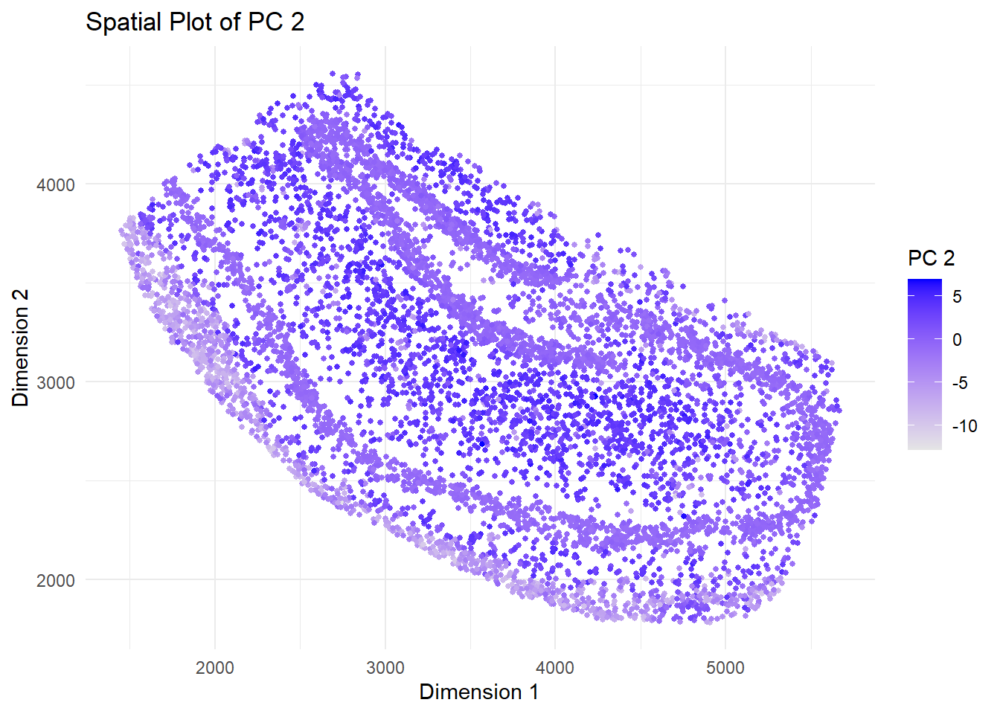
plot_pc(3)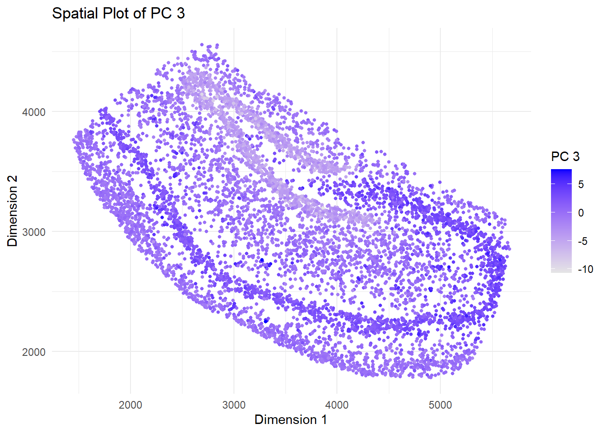
plot_pc(4)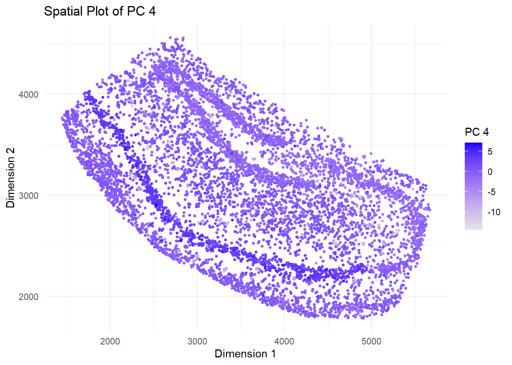
- For the first 20 pcs, compute the average weight for each of the following sets of genes:
positive_genes,negative_genes, andother_genes. Create ageom_pointplot of these with PC index as the x-axis, average weight as the y axis, and gene list type as the color.
loadings <- normalized_pca$rotation
loadings_20 <- loadings[, 1:20]
positive_weights <- colMeans(loadings_20[positive_genes, ])
negative_weights <- colMeans(loadings_20[negative_genes, ])
other_weights <- colMeans(loadings_20[other_genes, ])
weight_df <- data.frame(
PC = rep(1:20, times = 3),
AverageWeight = c(positive_weights, negative_weights, other_weights),
GeneSet = rep(c("Positive", "Negative", "Other"), each = 20)
)
ggplot(weight_df, aes(x = PC, y = AverageWeight, color = GeneSet)) +
geom_point() +
geom_line() +
labs(
title = "Average Gene Weight per PC",
x = "Principal Component (PC)",
y = "Average Weight",
color = "Gene Set"
) +
theme_minimal()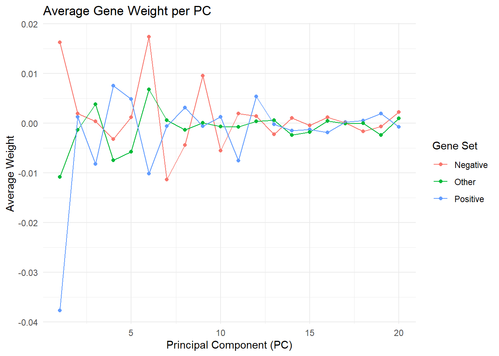
- Now, remake the previous plot for the first five PCs and include standard error bars.
loadings_5 <- loadings[, 1:5]
compute_summary <- function(genes, loadings_matrix) {
means <- colMeans(loadings_matrix[genes, ])
sds <- apply(loadings_matrix[genes, ], 2, sd)
n <- length(genes)
se <- sds / sqrt(n)
data.frame(
PC = 1:5,
AverageWeight = means,
SE = se
)
}
positive_summary <- compute_summary(positive_genes, loadings_5)
positive_summary$GeneSet <- "Positive"
negative_summary <- compute_summary(negative_genes, loadings_5)
negative_summary$GeneSet <- "Negative"
other_summary <- compute_summary(other_genes, loadings_5)
other_summary$GeneSet <- "Other"
summary_df <- rbind(positive_summary, negative_summary, other_summary)
ggplot(summary_df, aes(x = PC, y = AverageWeight, color = GeneSet)) +
geom_point() +
geom_line() +
geom_errorbar(aes(ymin = AverageWeight - SE, ymax = AverageWeight + SE), width = 0.2) +
labs(
title = "Average Gene Weight with SE (PC1 to PC5)",
x = "Principal Component (PC)",
y = "Average Weight",
color = "Gene Set"
) +
theme_minimal()
Which of the first 5 PCs appear to have statistically significant differences across gene types?
According to the plot, PC1 and PC2 exhibit evident and statistically significant differences between gene sets. For PC1, positive genes have a significantly lower average weight than negative and other genes, with no overlap in error bars. PC2 similarly shows discrepancies, with positive genes having higher weights than negative genes. PCs 3, 4, and 5 do not reveal significant differences because their average weights are similar and their error bars overlap significantly.